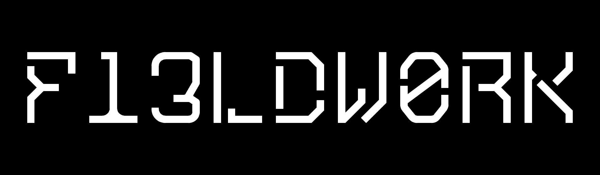
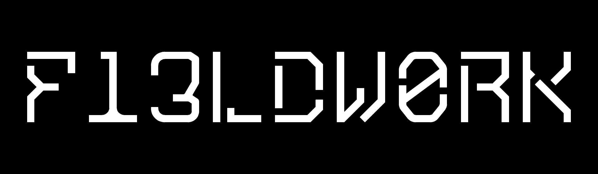

--{ M4n1f35+0 }--
This is a manual for how to engage in FLDWRK : n. -- a collective/artform that activates unconventional spaces through artistic intervention. Because the creative act often repurposes the space beyond the bounds of ordinary use, these acts are frequently transgressive. For this reason, we describe ourselves as an "illicit placemaking" collective.* Classical examples of illicit placemaking include underground raves, guerilla installations, unannounced theatrical performances, and squatted community centres or infoshops. *The term "illicit placemaking" is modified from the term "transgressive placemaking" employed by Sextant Works
--{ Protect Place }--
--{ Preserve DIY Culture }--
--{ Resist Power }--
--{ Pr0p3rty As Contract }--
FLDWRK is anti-commodification. Commodification is the act of giving something economic value. Economics is a social contract or, at scale, an emergent contract not between people but between human means and unsustainable mandates of indefinite growth. All value in a constructed system is itself constructed. The object alone has no intrinsic value, and we are responsible for any price it is assigned and the associated limitation of access to that object. Since FLDWRK stands for broadened access, we cannot at the same time support mandatory fees, pricetags, covers, etc. All FLDWRK Goods & Services will therefore always be free.
Free as in Free Beer
Society has clearly established a different standard, in which all goods are given pricetags and those prices are enforced by a heavily armed network of law enforcement. But we must also devise a way to operate sustainably within this larger system. The respect of the community is our greatest asset. By believing in our mission and supporting its principles, you empower us to continue fighting commodification by example. Our next line of defense is an acknowledgement that we live within this system (for now) and with each interaction with the outside world we incur expenses. So while we never mandate fees, donations help us to bridge the gap between idealism and reality.
Usufruct
The decommodication of intangibles like convenience, time, and usage is embodied by the principle of usufruct. Usufruct is an ancient legal principle embodying "the right to enjoy the use and advantages of another's property short of the destruction or waste of its substance." E.g. our tool library charges deposits to cover damages, but refunds all expenses in their entirety if equipment is returned in decent condition. Furthermore, these refundable deposits can be negotiated according to need. No one should be denied access to communal resources if it is within our power.Thrift & Reclamation
Commercial enterprise often assumes the preference of convenience, and unilaterally charges for this. Flair and presentation on top of basic goods and services is routinely commodified without the consumer's consent. This might include packaging, graphic design, distribution, surcharge for "brand-name goods" etc. Furthermore there are ever fewer establishments that offer barebones alternatives. We aim to be one of the few. As a consequence what goods we offer are decidedly in-convenient. Our speakers may be borrowed, they may be shitty, we might spin on toy controllers, the lights might be "borrowed" from a nearby construction site. But you're gonna fucking party and you're going to feel more alive. So fuck it. We scavenge for the as-yet uncommodified goods all around us and we shield them from the all-encroaching hunger of artificial scarcity. Through this ethos, the cost of access is de-commodified and offloaded onto the participant, within reason and always with respect for existing differentials of ability and access that are hallmarks of our unequal society. We believe not only that free services are worth greater effort, but also that this direct participation creates an investment of the user in the space or scene created. We are not an exclusive organization but we offer challenging experiences that create a system of self-selection where anyone can, but not everyone will. This is value, and with it we offset the gargantuan weight of the capitalist leviathan.Forgiveness over Permission
Quality over Quantity
Innovation over Complacency